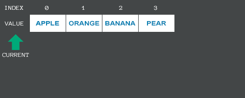

Modifying a Collection
Namespace: Unify.Collections, Unify.Collections.Generic
Assembly: Unify.Collections.dll
Unify Enumerators allow the underlying collection to be modified while iterating; items can be added, inserted or removed during the iteration process and Unify will adjust the enumerator on-the-fly.
To use this functionality the underlying collection must implement either of Unify's IUnifyObservableCollection or IUnifyObservableCollection<T> interface types; UnifyList and UnifyList<T> implement these interface types respectively.
Unify will use the following rules when a collection is modified while iterating:
- If an item is inserted before the current item position; the pointer will move to the right to maintain the current item position
- If an item is removed before the current item position; the pointer will move to the left to maintain the current item position
- If an item is inserted or removed after the current item position; the pointer remains unchanged
A special case occurs when the Unify Enumerator's Current item is removed. In this scenario, the Unify Enumerator will rewind over previously iterated items to position itself at the last known valid item; if there are no valid items available, Unify will use the enumerator's MoveNext() method as a last attempt to ensure a valid item is available. To prevent this behaviour, set the moveNextWhenInvalidated property to false; in this case the Unify Enumerator will remain in an invalid state until it is manually adjusted. Unify Enumerator's provide an isValid flag to test for validity. The default value for moveNextWhenInvalidated is true.
The following animation shows how Unify adjusts it's position as the underlying collection is modified.

Example
This example demonstrates how a Unify Enumerator behaves as items are added and removed from the underlying collection; an IUnifyList<string>, containing the numbers 0-9 as words, is used as the source collection for a UnifyForwardsEnumerator<string> enumerator type. It allows the Unify Enumerator to be controlled atomically, while observing the internal state at each operation. Error checking has been omitted to demonstrate exceptions, as described below.
Attach the script below to a GameObject and press:
- C to Print the Unify Enumerator's current item
- M to Call the Unify Enumerator's MoveNext() method
- P to Print the collection - the Unify Enumerator's current item is shown in square brackets and uppercase, e.g. [ZERO]
- T to Toggle the value of the moveNextWhenInvalidated flag
- X to Reset the Unify Enumerator
- A+0-9 Add that number as a word to the collection, e.g. holding A and pressing 4 will add "four" to the collection
- R+0-9 Remove that number from the collection, e.g. holding R and pressing 2 will remove "two" from the collection
using System;
using System.Text;
using Unify.Collections.Generic;
using UnityEngine;
public class Enumerators_ModifyingACollection : MonoBehaviour
{
private int[] keyCodes = { 48, 49, 50, 51, 52, 53, 54, 55, 56, 57, 256, 257, 258, 259, 260, 261, 262, 263, 264, 265 };
private string[] numbers = { "zero", "one", "two", "three", "four", "five", "six", "seven", "eight", "nine" };
private IUnifyList<string> list;
private IUnifyEnumerator<string> enumerator;
private bool moveNextWhenInvalidToggle = true;
void Awake()
{
list = new UnifyList<string>(numbers);
enumerator = new UnifyForwardsEnumerator<string>(list);
print("press C to print Current item, M to MoveNext(), P to print list, T to toggle moveNextWhenInvalidated flag, X to Reset enumerator");
print("press A+[0-9] to Add that number to the list, R+[0-9] to Remove that number from the list");
print(Environment.NewLine);
PrintList();
PrintCurrent();
}
// Update is called once per frame
void Update()
{
if (Input.GetKeyUp(KeyCode.C))
{
PrintCurrent();
}
if (Input.GetKeyUp(KeyCode.M))
{
enumerator.MoveNext();
PrintList();
}
if (Input.GetKeyUp(KeyCode.P))
{
PrintList();
}
if (Input.GetKey(KeyCode.R))
{
int numberPressed = GetNumericKeyPress();
if (numberPressed > -1)
{
if (list.Contains(numbers[numberPressed]))
{
print($"--- Removing '{numbers[numberPressed]}' from list ---");
list.Remove(numbers[numberPressed]);
PrintList();
}
else
{
print($"--- Item '{numbers[numberPressed]}' is NOT in the list ---");
}
}
}
if (Input.GetKey(KeyCode.A))
{
int numberPressed = GetNumericKeyPress();
if (numberPressed > -1)
{
if (list.Contains(numbers[numberPressed]))
{
print($"--- The list already contains '{numbers[numberPressed]}' ---");
}
else
{
print($"--- Adding '{numbers[numberPressed]}' to the list ---");
list.Add(numbers[numberPressed]);
PrintList();
}
}
}
if (Input.GetKeyUp(KeyCode.T))
{
moveNextWhenInvalidToggle = !moveNextWhenInvalidToggle;
print($"--- moveNextWhenInvalid = {moveNextWhenInvalidToggle} ---");
enumerator.moveNextWhenInvalidated = moveNextWhenInvalidToggle;
}
if (Input.GetKeyUp(KeyCode.X))
{
print("--- Reset ---");
enumerator.Reset();
}
}
private int GetNumericKeyPress()
{
for (int i = 0; i < keyCodes.Length; i++)
{
if (Input.GetKeyUp((KeyCode)keyCodes[i]))
{
if (keyCodes[i] >= 256)
return keyCodes[i] - 256;
return keyCodes[i] - 48;
}
}
return -1;
}
private void PrintCurrent()
{
print($"Current Item: {enumerator.Current}");
}
private void PrintList()
{
int currentIndex = enumerator.isValid ? list.IndexOf(enumerator.Current) : -1;
string indexes = string.Empty;
StringBuilder sb = new StringBuilder();
for (int i = 0; i < list.Count; i++)
{
sb.Append(currentIndex > -1 && currentIndex == i ? $"[{list[i].ToUpper()}]" : list[i]);
if (i < list.Count - 1)
sb.Append(", ");
}
print(sb);
}
}
Exceptions
Exceptions will always be thrown under the following circumstances:
- Accessing the Current item when the Unify Enumerator is in an invalid state will throw an ArgumentOutOfRangeException